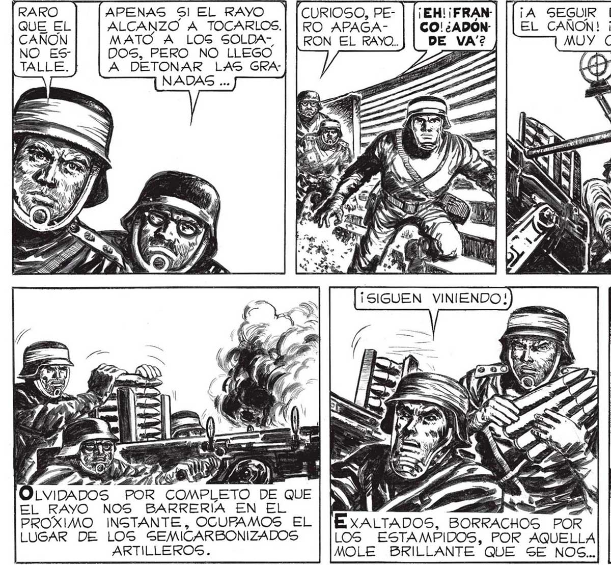
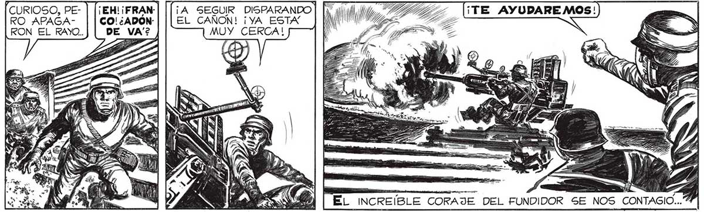
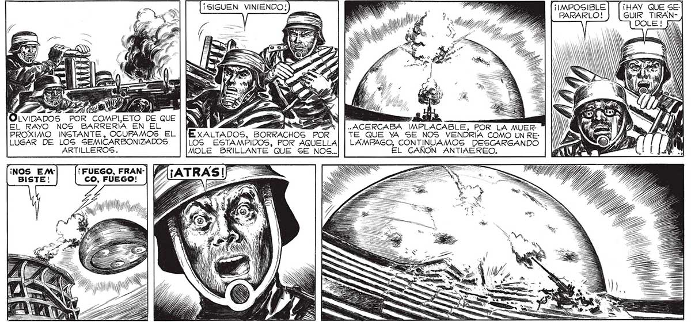

APENAS Sl EL RAYO ALCANZO A TOCARLOS. MATO A LOS SOLDADOS, PERO NO LLEGO A DETONAR LAS GRANADAS ... CURIOSO, PERO APAGARON EL RAYO. ¡EHL¡FRANCO! ¿ADÓNY LV! EL RAYO NOS BARRERIA EN EL PROXIMO INSTANTE, OCUPAMOS EL LUGAR DE LOS SEMICARBONIZADOS ARTILLEROS. 7 Pe ExXALTADOS, BORRACHOS POR LOS ESTAMPIDOS, POR AQUELLA MOLE BRILLANTE QUE SE NOS.. ¡NOS EM (FUEGO, FRAN-| BISTE! CO, FUEGO! E 114) IN /) 1) Ana y y» z Z A, ¡A SEGUIR DISPARANDO. EL CAÑON! ¡YA ESTA MUY CERCA! NN ENS NS ES SNS por TS DY, ga , e Wy . IN y Á AA eg Ent! 4 > == ACERCABA IMPLACABLE, POR LA MUERTE QUE YA SE NOS VENDRIA COMO UN RELAMPAGO, CONTINUAMOS DESCARGANDO EL CANON ANTIAEREO. "IMPOSIBLE PARARLO! $ S ar Ez ¡HAY QUE SEGUIR TIRAN119


